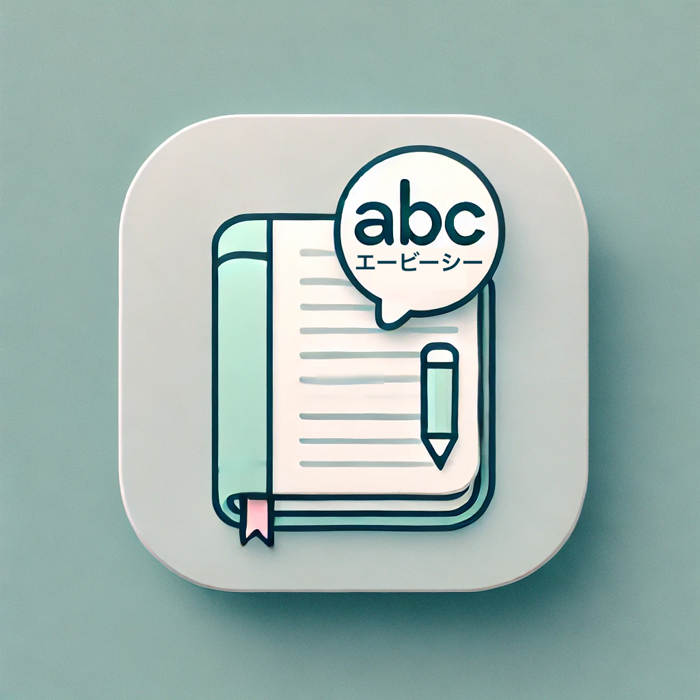

英語学習をサポートする英文管理アプリ
MY英文帳は、英語学習のための英文管理・学習アプリです。
自分だけの英文帳を作成し、読み上げ・クイズ・単語帳形式で効率よく学習できます。
iPhone（iOS）専用アプリ
英語学習を続ける中で、「自分専用の英文帳を作りたい」という思いから
MY英文帳を開発しました。
覚えたい英文だけを自由に管理でき、
日々の学習をシンプルに継続できるアプリを目指しています。
英語は単語単体ではなく、例文で覚えることで実践的な表現力が身につきます。
MY英文帳では、自分が出会った英文を記録し、
繰り返し復習することで自然な英語習得をサポートします。
V2.3
・トップページのスクロールを追加
・意味（日本語）が多い場合も文字を小さくする
V2.2
・英文の文字数によって文字サイズを調整するように修正
V2.1
・英文の4択クイズ機能を追加
V2.0
・英文のゆっくり再生機能を追加
V1.9
・あの頃の単語帳機能の発音部分の文字サイズを少し小さく変更
V1.8
・画面レイアウト、ボタン色変更
V1.7
・あの頃の単語帳機能追加（めくったら答えが分かる、どこか懐かしさを感じるアレです）
・今現在登録している英文総数を表示
・広告を再生するまでの間「広告を読み込み中です…」のメッセージを出す
・あの頃の単語帳機能用に英文→意味ボタン、意味→英文ボタン、ランダムボタン（ON/OFF）を追加
V1.6
・英文のオンライン自動翻訳時に広告表示を確認する際の「はい、いいえ」の表示位置を変更
V1.5
・不要な英文の削除機能を追加
・英文の更新（変更）機能を追加
・入力例のプレースホルダーを追加
・音量があったらマナーモードでも音を出すように変更
・インターネットに接続して登録できる英文のオンライン自動翻訳機能追加（広告あり）
V1.4
・英文の読み上げ機能を追加
・英文の読み上げ機能追加に伴い再生アイコンを追加
・他タップ時にiphoneのキーボードを引っ込める処理を追加
開発者：umehei
個人開発アプリとして運営しています。